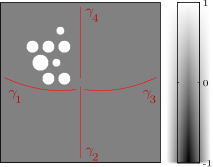
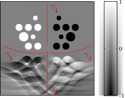

Image Cancellation in Undirected Synthetic Aperture Radar
|  |  |
| (a) A set of objects and four flight paths, in red. | (b) Additional objects added to hide the original objects from view of all four flight paths. |
(c) SAR image of the scene in (b); the objects are mostly concealed.
In synthetic aperture radar (SAR), a radar system mounted on an airplane or satellite travels along a prescribed path, repeatedly sending radar pulses and listening for the echos, which are processed into an image. The radar beam, rather than being omnidirectional, only illuminates one side of the flight path, for a good reason: due to symmetry, it is otherwise impossible to tell if an echo comes from the left or right.
Unfortunately, for low-frequency radar (used for foliage penetration, for instance), it may not be practical to build an antenna with a sufficiently directional radiation pattern. The result is a left-right ambiguity: every object will have a mirror image on the other side of the path. It may be possible to lessen this ambiguity with a curved flight path[1], but in a certain mathematical sense it cannot be avoided[2].
In this project, under co-advisors Gunther Uhlmann and Plamen Stefanov, I studied the image artifacts (ghost images) that can appear, from a mathematical perspective, and whether it is possible to conceal an object from a given flight path. In tandem, I implemented a wave solver-based algorithm for computing these ghost images and concealing objects in MATLAB. More information is available in this paper.
[1] C. Nolan and M. Cheney, "Synthetic aperture inversion for arbitrary flight paths and nonflat topography." IEEE Trans. Image Process. 12 (2003).
[2] G. Uhlmann and P. Stefanov, "Is a curved flight path in SAR better than a straight one?" SIAM J. Appl. Math. 73 (2013).